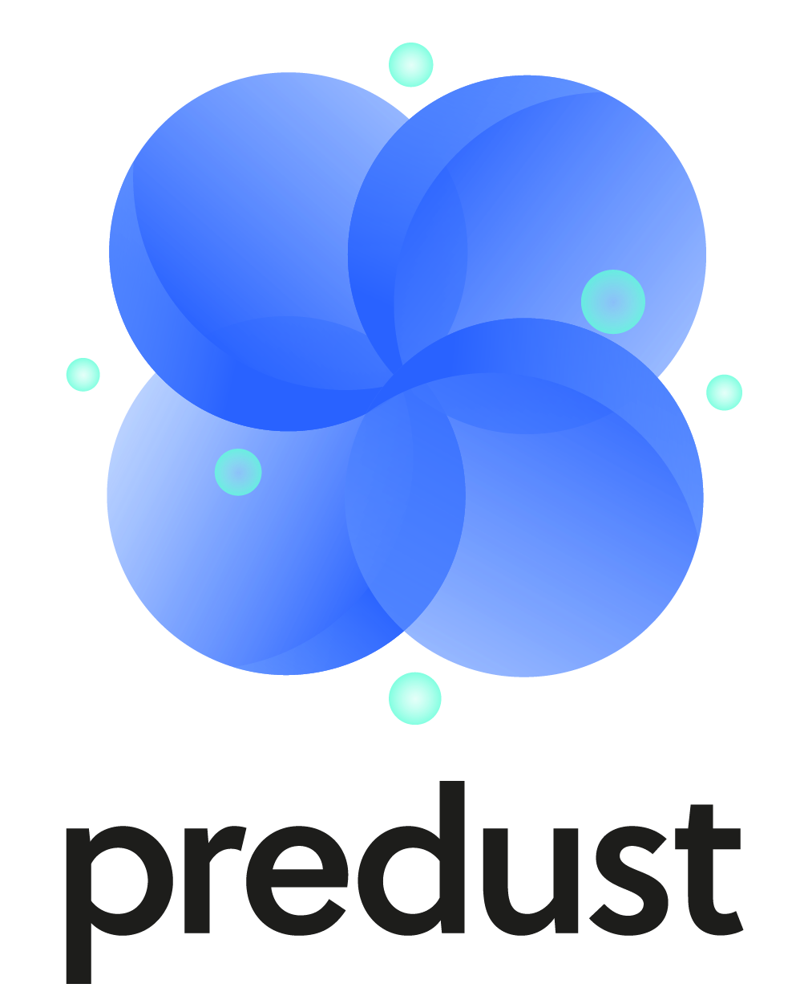

대기오염 대시보드
24.12.02 updated
시작 날짜:
종료 날짜:
대기물질
미세먼지
초미세먼지
오존
이산화질소
일산화탄소
시/도
-전체-
서울특별시
부산광역시
대구광역시
인천광역시
광주광역시
대전광역시
울산광역시
경기도
강원특별자치도
충청북도
충청남도
전라북도
전라남도
세종특별자치시
경상북도
경상남도
제주특별자치도
출처 기관
에어코리아
환경부
필터 적용
지도 저장
데이터 다운로드
실시간 대기정보
미세먼지:
80㎍/㎥ 보통 |
초미세먼지:
52 ㎍/㎥ 나쁨
초미세먼지
🙂
미세먼지
😀
오존
🙂
이산화질소
😷